|
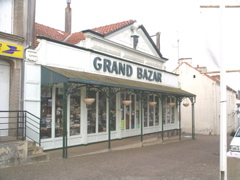 Le Musée |
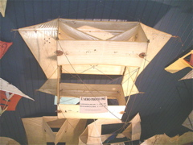 Un Aéro-Photo de Gomes |
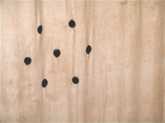 Typique de Gomes |
|
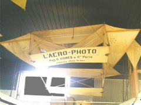 Le 2eme Aéro-Photo, splendide. |
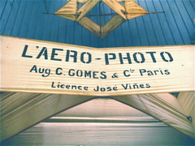 Celui-ci est signé. |
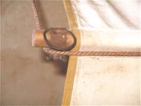 Détail (la ficelle passe là par hasard). |
|
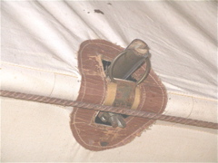 Détail central : collier à vis |
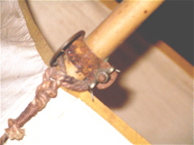 Détail avant |
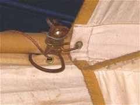 Intercellules |
|
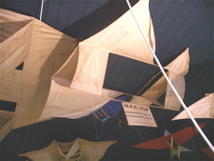 Genre Conyne de MFB (inconnu ?) |
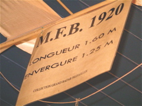 Son étiquette. |
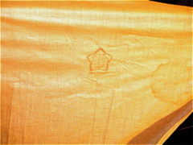 Le logo MFB sur la toile. |
|
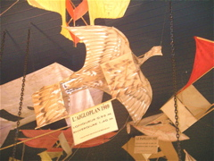 Le célèbre Aigloplan. |
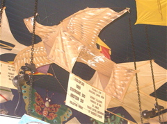 Vue opposée. |
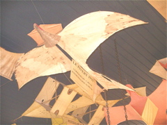 Le Pivert |
|
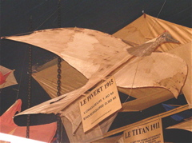 Avec une tête 3D ! |
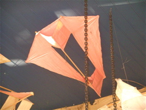 Un Conyne comme le mien à à mes 7 ans (celui-là ?)... |
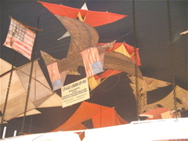 Un Aigle Américain, une commande ? |
|
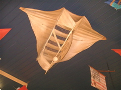 Le Volley-ball (plutot Basket ???). |
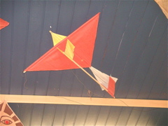 Le Martinet, tout petit. |
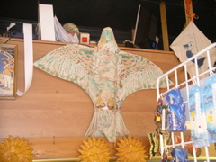 Georges Deffain surveille son musée. |
|
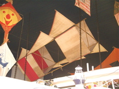 Beau cellulaire multi-ailes. |
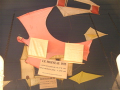 Le Moineau. |
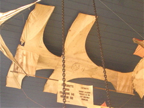 Antoinette. "Illusion parfaite", faut être imaginatif ! |
|
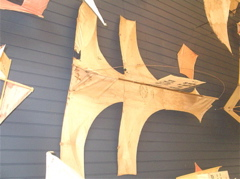 rem : La vraie était monoplan ! |
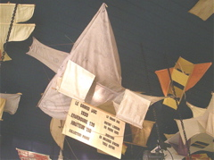 Le Grand Duc. |
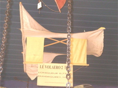 Le Volaero, très détendu. |
|
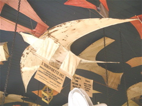 Une Hirondette, proche de mes oiseaux... |
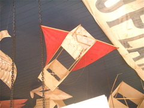 Cellulaire. En haut, la banderole AIGLOPLAN. |
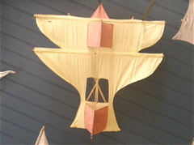 Un Centaure "biplan". |